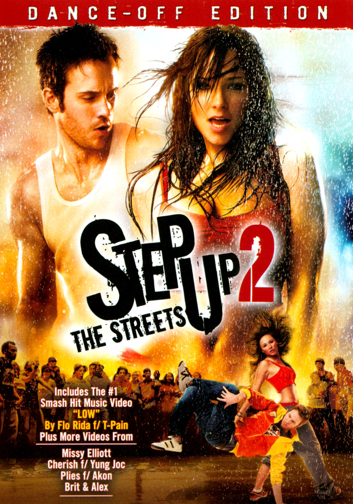
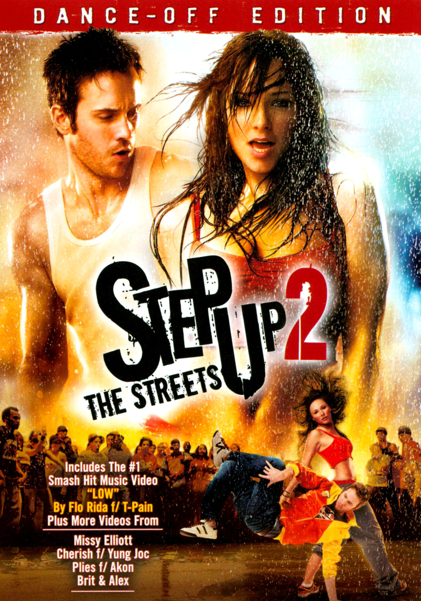

Morocco has a population of over 33.8 million and an area of 710,850 km2 (274,460 sq mi). Its capital is Rabat, and the largest city is Casablanca. Other major cities include Marrakesh, Tangier, Salé, Fes, Meknes and Oujda. A historically prominent regional power, Morocco has a history of independence not shared by its neighbours. Since the foundation of the first Moroccan state by Idris I in 788 AD, the country has been ruled by a series of independent dynasties, reaching its zenith under the Almoravid dynasty and Almohad dynasty, spanning parts of Iberia and northwestern Africa. The Marinid and Saadi dynasties continued the struggle against foreign domination, and Morocco remained the only Northwest African country to avoid Ottoman occupation. The Alaouite dynasty, the current ruling dynasty, seized power in 1631. In 1912, Morocco was divided into French and Spanish protectorates, with an international zone in Tangier, and regained its independence in 1956. Moroccan culture is a blend of Berber, Arab, West African and European influnces.
 
